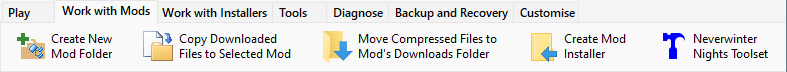

One of the most common tasks you perform is downloading Mods from Internet Sites and copying the required files to the correct NWN Installation or User Files folders.
The Installer Tool is designed to make this much simpler by automating many of the tasks you need to perform. These procedures list the steps you can use to create Mod Installers.

You can click the illustration above to navigate to the relevant topic.
Use Download Project to download Neverwinter Vault Project files.
Procedure
- Download all the files required to install and play the Mod.
- Select New Mod from the Manage menu to create the Mod Folder you will use to store the Mod's assets.
- Select Add Files to Mod from the File menu, select the files you downloaded in step 1 and click Open.
- Press Ctrl+L or select Create Installer from the Manage menu.
- Select Install from the Manage menu.
- You are now ready to use the Mod.
Recommended Procedure
- Download all the files required to install and play the Mod.
- Select New Mod from the Manage menu to create the Mod Folder you will use to store the Mod's assets.
- Click the
 Add Link icon to record the Mod's web page address (URL).
Add Link icon to record the Mod's web page address (URL).
- Select Add Files to Mod from the File menu, select the files you downloaded in step 1 and click Open.
- Reduce the number of files in the Contents panel by moving files used to create the Installer to NIT's -Downloads folder.
- Review Mod documentation in the files you downloaded.
- Press Ctrl+L or select Create Installer from the Manage menu.
- Review the contents of the Mod Installer.
- Select Install from the Manage menu.
- You are now ready to use the Mod.
Recommended optional task.
Related Topics
Download and install Neverwinter Vault Projects
Download and install Mods from other sites
Add a new Mod
Record a Mod's Web Page Link
Add downloaded files to a Mod
Reduce file clutter
Review Mod information in added files
Create Mod Installers
Customise Mod Installers
Manage Mod file conflicts
Install Mods
Uninstall Mods
Deal with Mod updates
Make Mod notes and record information
Publish Mods
Add Mods from downloaded files
Surazal's Mod notes